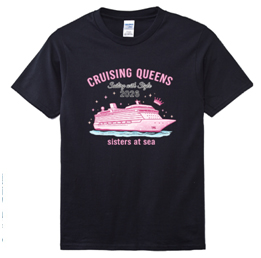
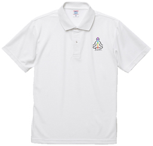
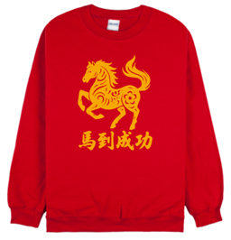
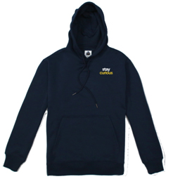

團體服常見於公司活動、班級、社團或路跑活動。一件設計良好的團體服，不僅能增加團隊凝聚力，也能成為活動的紀念。
在設計團體服之前，先思考衣服的使用場景，這會影響後續的設計風格與材質選擇。常見用途包括：
圖案是團體服的靈魂，您可以從以下方向著手設計：
根據您的活動性質與預算，選擇最適合的衣服種類：

純棉 T-shirt
適合日常活動，穿著舒適

Polo 衫
較正式，常用於公司制服

大學 T / 排汗衫
適合運動或活動主題

帽T 或 外套
適合秋冬活動穿著
不同的印刷技術會直接影響價格與成品效果：
| 印刷方式 | 適用情況 |
|---|---|
| 網版印刷 | 適合數量較多、圖案單純的團體服，成本較低。 |
| 數位印刷 | 適合圖案顏色較多或少量製作。 |
| 熱轉印 | 適合高度客製化的設計。 |
團體服通常會有「數量越多、單價越低」的情況。製作前請先確認以下資訊：
20 件以上就可以製作，但不同印刷方式與衣服款式可能會有不同限制。
圖檔及尺寸數量確認, 工作時間為10的工作天， 如果數量較多或需要特殊印刷，時間可能會再延長。
如果是日常活動或公司活動，純棉 T-shirt 穿起來比較舒適。 如果是路跑或運動活動，排汗衫會比較適合。
數量較多時建議使用網版印刷，成本較低； 如果圖案顏色較多或數量較少，數位印刷或熱轉印會比較適合。